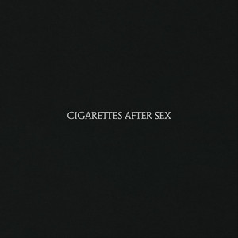

About the Album
"Cigarettes After Sex" is the self-titled debut album of the El Paso band led by Greg Gonzalez, released in 2017. Built on slow tempos, reverb-soaked guitars and Gonzalez's hushed, intimate vocals, it is a dreamy, cinematic record about love, longing and memory. Its black-and-white aesthetic and late-night atmosphere turned songs like "K." and "Apocalypse" into modern dream pop classics.
Tracklist
- K.
- Each Time You Fall in Love
- Sunsetz
- Flash
- Apocalypse
- Opera House
- Truly
- Young & Dumb
- Sweet
- John Wayne